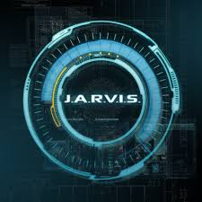
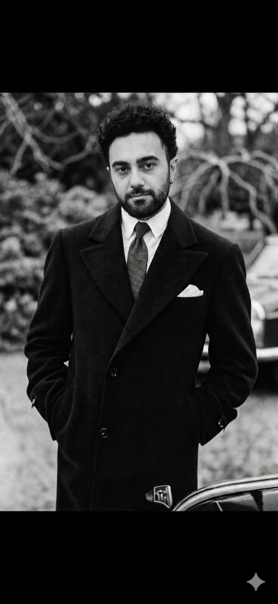
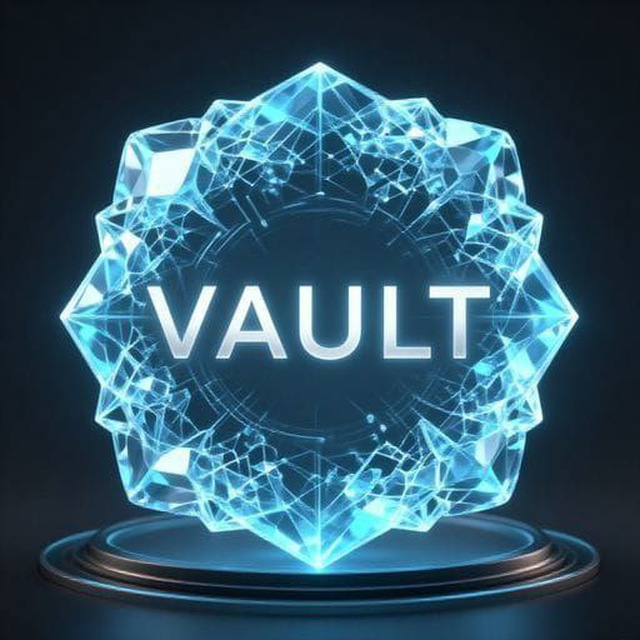
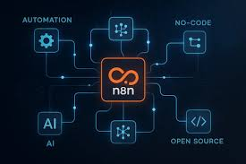
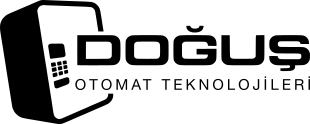
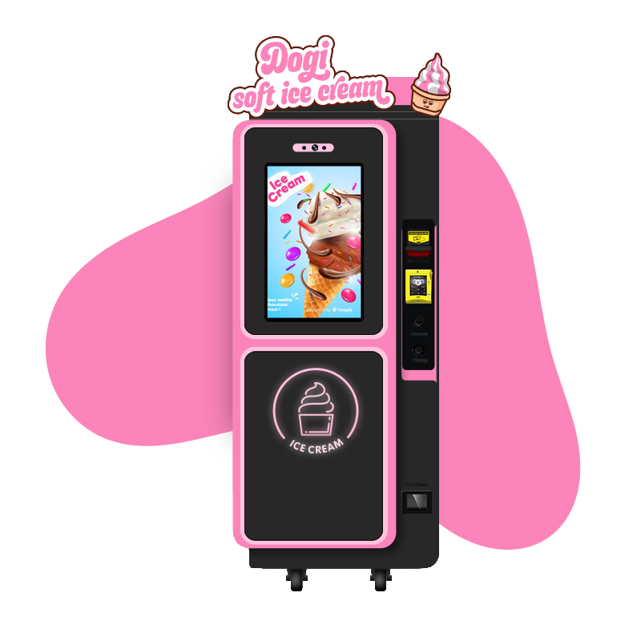
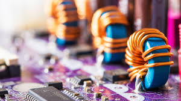

N°/ 01 AI AssistantJ.A.R.V.I.S sesli ajan
Gemini Pro destekli sesli asistan. Konuşma tanıma ve TTS ile Türkçe doğal sohbet. Jarvis gibi — ama seninle konuşan.
Kod yazan bir BT denetçisi. Kontrolleri bilen bir yapay zeka mühendisi. Ürün çıkaran bir elektrik mühendisi. Üç disiplin, tek operatör.

Çoğu denetçi kod yazmaz. Çoğu mühendis ITGC'yi bilmez. Ben ikisini de yaparım — ve bu iş bu yüzden daha iyi çıkar.
3 yıl boyunca Türkiye'nin en büyük bankalarının üzerinde çalıştığı sistemleri denetledim — kontrol açıklarını avladım, riski haritalandırdım, ISO 27001, COBIT ve BDDK karşısında uyumu kanıtladım.
Sonra kendime lazım olan araçları yazmaya başladım. Raporlama süresini ~%40 kısan Python script'leri. Claude, Gemini, GPT — bir juniordan daha hızlı delil okuyan LLM pipeline'ları. Tüm bir iş akışını yöneten çoklu ajan sistemleri.
Sadece kod yazan bir denetçi değilim. Sadece uyumu bilen bir mühendis de değilim. İkisini birden teslim eden operatörüm.
LLM asistanları ve çoklu ajan panolarından ESP32 donanımına ve BDDK seviyesinde denetim otomasyonuna kadar.

N°/ 01 AI AssistantGemini Pro destekli sesli asistan. Konuşma tanıma ve TTS ile Türkçe doğal sohbet. Jarvis gibi — ama seninle konuşan.

N°/ 02 Multi-AgentÇoklu ajan arayüzü. Gerçek zamanlı komut gönderimi ve canlı sistem telemetrisi. Vanilla JS ile retro-futüristik ops paneli.

N°/ 03 AutomationVAULT ajanlarını, dış API'leri ve iç araçları birbirine bağlayan n8n pipeline'ları. Tek seferlik script'leri kalıcı workflow'a çeviren katman.

N°/ 04 Full-StackDoğuş Otomat için üretim ortamında çalışan temizlik-operasyon takibi. Rol bazlı kimlik doğrulama, fotoğraf yükleme, CSV raporlama, yönetici paneli.

N°/ 05 Live v3.0Gemini 2.0-Flash destekli bot. Bağlamsal hafıza, glass-morphism arayüz ve genişletilmiş hata kodu veritabanı.

N°/ 06 HardwareLisans bitirme projesi. WebSocket video akışı, PWM motor kontrolü, tarayıcı tabanlı komut paneli — sıfır özel SDK.
 N°/ 07
Audit Tooling
N°/ 07
Audit Tooling
Toplu delil işleme ve rapor üretimi için Python script'leri. AlternatifBank'ta üretim ortamında — denetim döngüsünde ~%40 zaman tasarrufu.
SPWM inverter, üç fazlı doğrultucu, IGBT sürücü tasarımı. Tezgahta kuruldu, osiloskopta doğrulandı, akademik olarak savunuldu.
Big 4 denetim, özel bankacılık, kripto borsası, endüstriyel elektronik. Özgeçmiş bilerek yan yana ilerliyor.
Canlı bir kripto işlem platformunda BT iç denetim fonksiyonunu yönetiyorum — erişim, değişiklik, BT operasyonları — Big-4 dış denetçileriyle koordinasyon halinde.
BDDK mevzuatı kapsamında periyodik BT sistem ve süreç uyumluluk denetimleri. Raporlama döngüsünü ~%40 kısan Python otomasyonu geliştirdim.
10+ önde gelen banka ve finans kurumunda ITGC denetimleri. ISO 27001, COBIT, NIST. Nessus ve Burp Suite ile sızma testi ve zafiyet değerlendirmesi.
Siber güvenlik otomasyon araçları ve zafiyet tarama uygulamaları. Python tabanlı güvenlik raporlama sistemleri ve veri boru hatları.
Gemi otomasyonu için elektronik kontrol sistemleri. Teknik çizim, şematik üretimi, canlı endüstriyel projelerde tezgah testleri.
Denetim otomasyonu ve yapay zeka asistanları için kullandığım araclar. Donanım ve güç elektroniği tezgahta.
KPMG Global Quality & Risk Management ve bağımsız kuruluşlardan derlenmiş seçki. Tam liste talep üzerine.